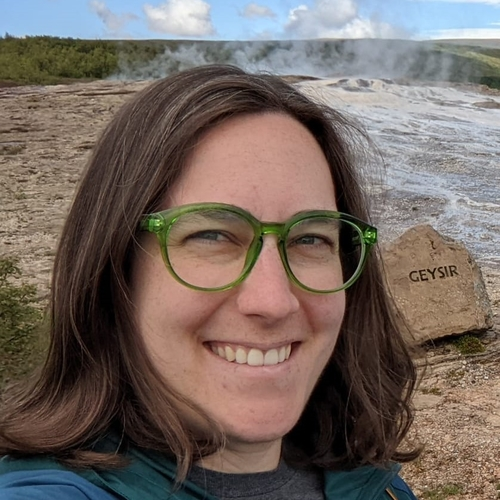

Welcome to my website! I am a PhD candidate in Political Science at the University of Minnesota. My interests are in American political economy, political geography, and political methodology. My research studies how the land influences the work historically done in communities, and how globalization-, automation-, and consolidation-driven trends in that work can impact the community’s identity and politics. I am also a third year Population Studies trainee with UMN’s Minnesota Population Center, which has influenced my work tremendously.
I am involved in student leadership and service here at UMN. I have been a member of the Council of Graduate Students for three years, was on the University Senate for two, and have organized my department’s American Politics Colloquium for the past two years. This year, I am an organizer for both the American Politics and Political Methodology Colloquia.
Before joining my current department, I was a graduate student in the School of Statistics (2017-2020), a Technical Services Analyst at Epic Systems (2015-2017), and an undergrad in Math and Environmental Studies at Wellesley College (2011-2015). I grew up in Northeast Ohio.
In my spare time, I like to travel. I’ve been to 49 states, but perhaps my favorite recent trip is when I walked barefoot through the Mississippi River, all of the way across it. I did this in Itasca State Park, and it was perhaps the coolest 25 steps I have ever taken. I also like to play strategy games, watch Cleveland sports (Minnesota sports are also acceptable), go on walks around my local lake, and eat good food. I am a fan of fall, gardening, and ebikes.